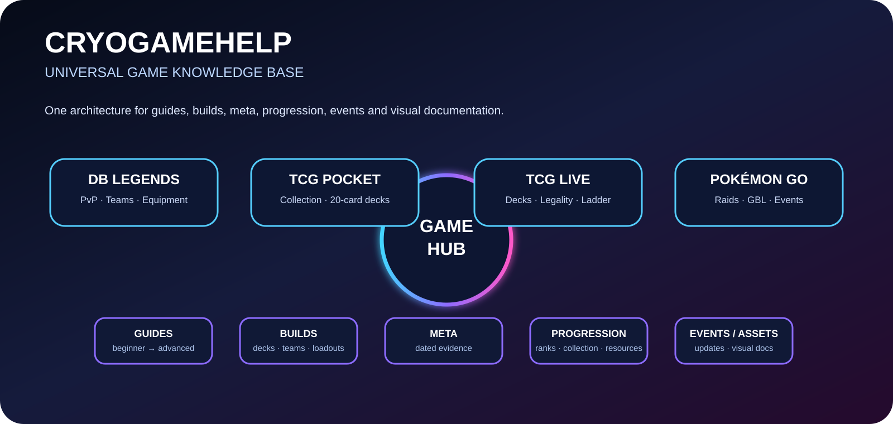

PLAY · LEARN · BUILD · IMPROVE · TOGETHER
One Hub.
All Games.
Visuelle Game-Wissensbasis mit Guides, Builds, Teams, Decks, Meta, Progression, Events und interaktiven Tools.
4 Games8 Docs-Layer∞ Build-Slots1 gemeinsames System

GAME MATRIX
Wähle dein Spiel
INTERACTIVE BUILDER
Team & Deck Builder
Offense
Defense
Support
Synergy
VISUAL GUIDES
Dokumentations-Module
EVENT PIPELINE
Universeller Ablauf
Live-ServiceUpdatePatch · Expansion · Rotation
Build RefreshTeams, Decks und Loadouts neu bewerten
Meta SnapshotQuellen + strategische Bewertung trennen
Visual PublishREADME, Assets und Dashboard synchronisieren